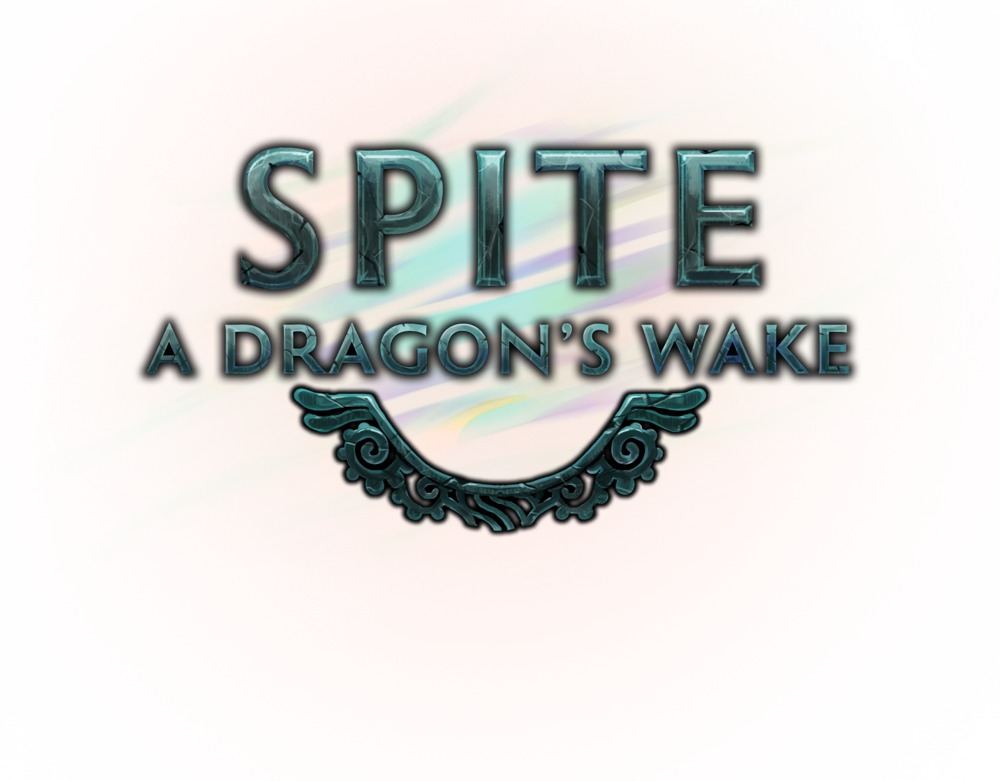

Home
This is the main page for my personal portfolio website, below I'll be writing an introduction to myself, in addition to a short snippet describing the things I have worked on, if you are interested in the more nitty gritty of the code either use the menu at the top, or you can click the title of each of the sections below.
I am currently a student at The Game Assembly, which is a school for higher vocational learning in stockholm. During my time here I've gotten the opportunity to finish a lot of different projects and tasks, both individual assignments, and game projects which have been done in groups between 12-15 people.
This has given me a wonderful opportunity to learn more about how to write code, design video games, and work together with fellow game-developers in order to create significantly better games than I ever could've on my own.

Specialization
For my Specialization I have been working on creating an Eulerian fluid simulation, that is a fluid simulation based on a fixed grid, which tracks velocities and the like, as opposed to a simulation which simulates individual particles and their interactions.
Spite A Dragon's Wake
This was our fifth project, we were split into the groups which we would come to work within for the rest of our time at the school. Letting us get used to working with eachother while creating our last 3 games. This project had us create a diablo inspired game as an "expansion" to the schools "Spite" project, meaning that we were trying to create something which could fit in alongside similar games made by other students who were at the school before us.
During our 5th project we were in addition to the game itself tasked with developing our own game engine so to speak, the base expectation is that we would start out with the school's engine and then iterate on that in order to develop our own thing, adding in features which are intentionally abscent from the base engine.
We also were able to work with people from another school in stockholm, called Audio Production Academy, where they would create all the sounds and music for the game. This ended up providing a lot of information and experience with working not only with a local team, but highlighted the difficulties of working with team members who were not immedietely available and thus required us to adapt and figure out more efficient ways of communicating.
Game Project 6
In this game project we were tasked to create an FPS game, this introduced surprising complications and due to the lack of an official partnership with APA during this one we had to learn how to create and implement audio on our own, in addition to implementing a system for visual scripting, a physics engine, and behaviour trees for ai.